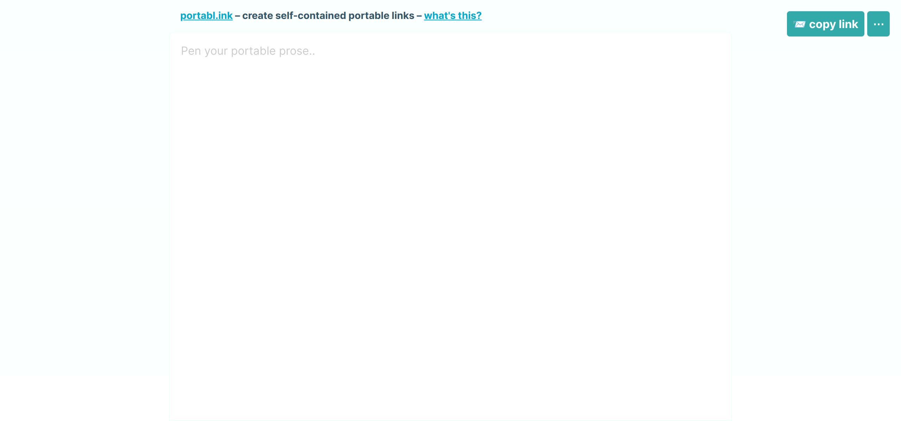
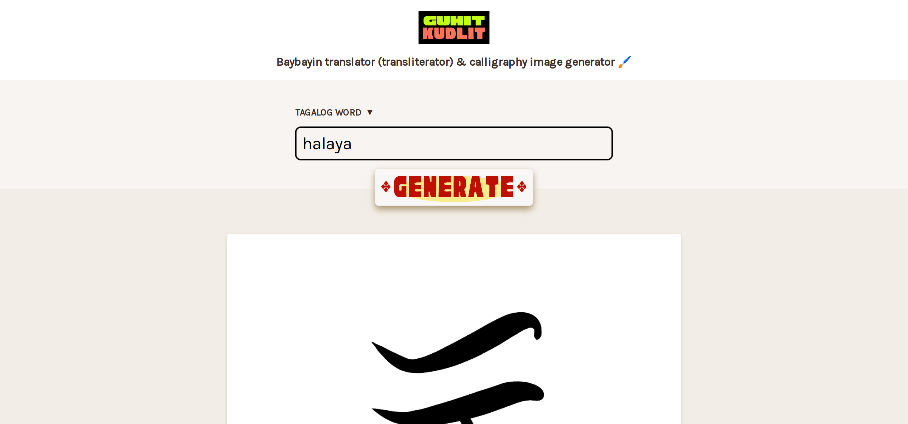
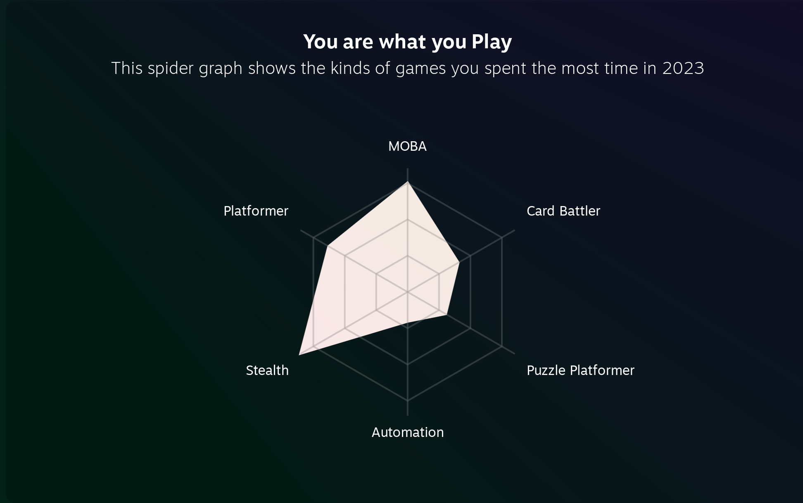
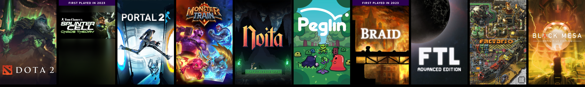

What happened in 2023? Stuff happened.
2023 website redesign 🎨
Feb 2023, I redesigned my site, with a goal of making it more personal instead of just being a mere portfolio.

It came with a blog section, which made me start writing a blog.
Started a blog 🖊
“I’m starting a blog!
I’ve done some blogging in the past (for gamedev), and I already do write-ups for my projects, so I think it’d be good to officially keep a blog!
I have some ideas to populate the first few posts, then we’ll see how it goes from there.
Watch this space!”
First blog post on the new site (now unpublished), 24 Feb 2023
Well, it went well! In 2023 I had:
The hottest posts were:
It is a nice new hobby and something I shall continue. 🙌
Side projects 💻
This year I launched two webapps, portabl.ink and GuhitKudlit!

portabl.ink
Portablink was just a fun experiment without much utility. I don’t have analytics on it so I don’t know if anyone visits it. We’ll see if I renew the domain.

GuhitKudlit - Baybayin calligraphy generator
GuhitKudlit did great and is getting regular visitors coming from Google. From the Google Search Console report, it looks like there is demand for baybayin translation and generation or tattoos or whatever. I might rewrite this site properly if it sees more use.
Personal / Misc ✨
- 💼 Got a new job. Still a software engineer.
- 🎮 Finally finished Tears of the Kingdom.
- 🎮 Replayed Splinter Cell: Chaos Theory. First was around 15 years ago.
- 🎓 Began an attempt to learn the Japanese language.
Steam 🫧
Here’s a bit of my Steam Year in Review:

MOBA, Platformer, and Stealth… I guess I can conclude that I played a diverse range of games this year? This graph is missing the roguelike category though.

Most played games on Steam in order
Apparently, I played a lot of Dota. I don’t even remember playing it this year.
You might have noticed the bias for the roguelike genre. Shoutout to Noita, FTL, and Monster Train. Great games.
Spotify 🎵
Here’s a nonsensical thing from my Spotify Wrapped — My Top Artists in 2023:
Tycho is chillwave ambient IDM downtempo post-rock instrumental music. Nice listening.
Vanilla is instrumental hip hop soul-sampling electronic music. Nice grooves.
The third artist is me, so it doesn’t count.
I don’t actually know who the fourth artist is. I’ll explain below.
Lamp is a Japanese band making indie pop jazz pop bossa nova J-pop music. I like the chord progressions.
I think I use Spotify a bit differently than most people. I don’t primarily listen to artists. I just use the playlists, especially the dynamic Discover Weekly playlist. As such, “top artists” don’t really make sense. These top 5 artists don’t make up a majority of my listens. Accidentally listening to any artist’s song twice skyrockets them to my “top artists” list. Nonetheless, there are some exceptional artists that I discover and do replay from time to time; some were mentioned above.
Conclusion 💡
The year two thousand and twenty-three was definitely one of the years of all time.